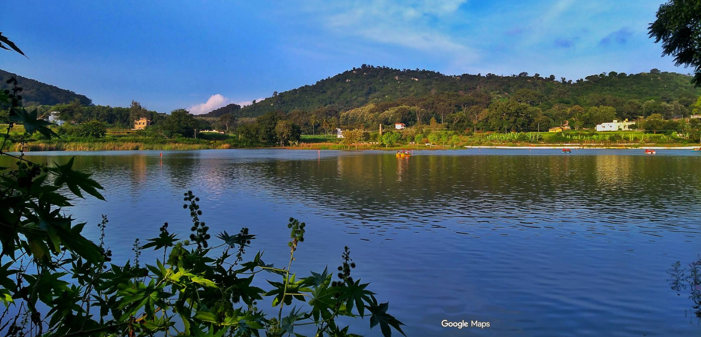

Yelagiri Hills

Yelagiri Hills, located in Tamil Nadu's Vellore district, is a serene hill station at an altitude of 1,410 meters.
Known for its lush greenery, pleasant climate, and scenic beauty, it spans 30 square kilometers with 14 hamlets.
Popular attractions include the artificial Punganoor Lake, trekking paths, herbal farms, and temples.
Yelagiri hosts an annual summer festival and offers adventure activities like paragliding and rock climbing, attracting nature lovers and tourists alike.